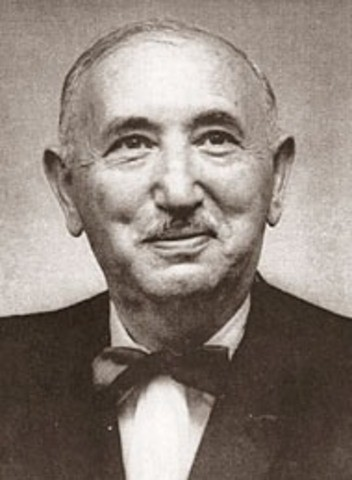
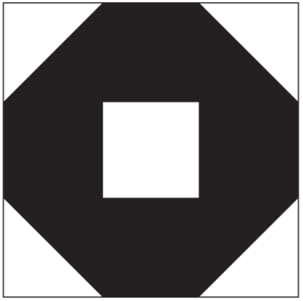
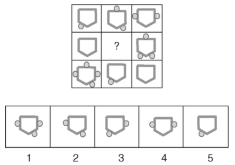
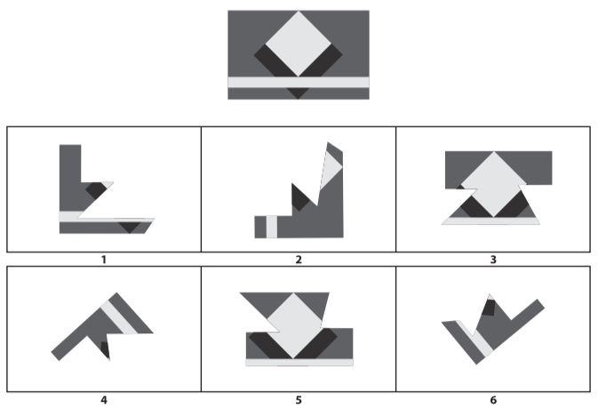
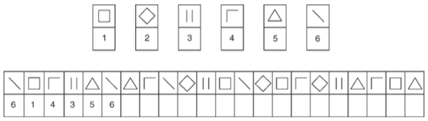
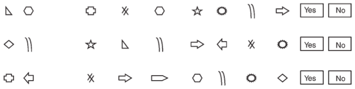
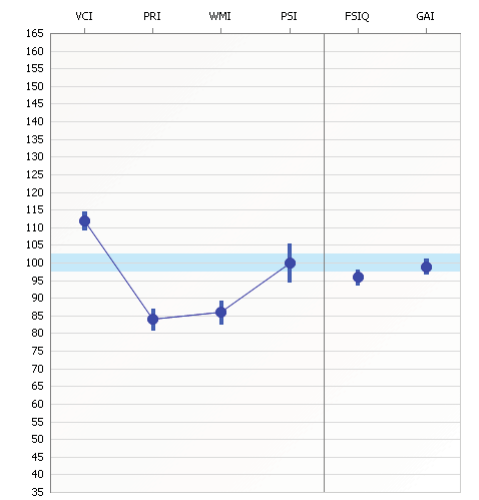

什么是智力测验？
智力测验
人们用尺子量身高，用智力测验「量」智力。智力测验就是用来量你有多少智力的尺子。
智力不像身高，看不见摸不着，怎么量呢？
思路和考试很像：心理学家会先设计一些题目让你做，这些题目会用到你的智力。你智力越高，题目做得就越好，得分就会越高。心理学家最后就根据你的分数来推断你的智力水平。
我们直接看具体的例子。
韦氏智力测验（Wechsler Intelligence Scale）是目前最流行的智力测验之一。它之所以叫「韦氏」，是因为最初设计这个测验的心理学家名叫大卫·韦克斯勒（David Wechsler）：
韦氏智力测验历史悠久，生命力旺盛，在研究和应用两方面都吃得很开。自 1939 年第一版问世以来，韦氏智力测验就一直在修订和完善，之中分化成针对幼儿、儿童、成人的三种测验，其中儿童测验在 2014 年已经到了第五版。我国曾多次引进过韦氏智力测验。
我们下面就来看看韦氏成人智力测验具体是什么样的。以下简称「韦氏成人」。
前面说了，智力测验和考试很像，都需要让你做题。韦氏成人的题目非常多，可以分成四大类，每个类分别考查智力的不同方面。这四类分别是：
- 言语理解（Verbal Comprehension）
- 知觉推理（Perceptual Reasoning）
- 工作记忆（Working Memory）
- 加工速度（Processing Speed）
我们一个个来看。
言语理解这个类别的题目考查你对概念、常识的理解，以及相应的推理能力。具体来讲，有的题目会让你解释词汇，比如「『构思』是什么意思？」；有的题目让你寻找概念间的相似性，比如「鱼和鸟有什么相似的地方？」；有的题目让你基于常识回答问题，比如「在银行里存钱有什么好处？」；有的题目考查你是否了解一些基本知识，比如「第一个发射人造卫星的是哪个国家？」。
知觉推理这个类别的题目考查你对空间和视觉刺激的加工能力。比如用积木拼出下面的图形：
比如从下图中的下方五个图形中选出一个最恰当的放在问号的位置：
比如从下图中下方六个图形中挑出三个拼出上方的图形：
工作记忆这个类别的题目考查你同时加工大量信息的能力。比如主考官先读一串数字，然后让你倒着复述出来；比如在有限的时间里做算术，「小明买了 5 本书，妈妈又给了他 2 本，他给了同学 1 本，最后一共有几本？」；比如主考官先混杂地读一些数字和字母，然后让你把其中的数字和字母分别按照升序复述出来。
加工速度这个类别的题目考查你加工信息的速度。比如按照下图中上方的数字和图形的配对，在下方空格内快速填入正确的数字：
比如快速判断左边的两个图形是否出现在右边的一串图形中：
做完这些题目，主考官就可以给你算分了，这个分也就是我们常说的「智商」。
智商
智商，简单地说就是一个数值，心理学家通常用这个数值来代表你的智力水平，就像用 175 厘米表示小王的身高。
比如下面这张图就显示了小王的智商：
VCI、PRI、WMI、PSI 分别是我们上面说的那四类题目的得分；FSIQ 是总分，代表整体的智力水平，也就是通常所说的智商；GAI 先不用管。从图上可以看出，言语理解（VCI）大概 112 分，知觉推理（PRI）大概 84 分，整体智力水平大概 96 分。这些分数说明了什么？小王聪明吗，还是智力捉急？
智商其实不是一个绝对的值，而是相对的，它代表了你在人群中所处的位置。假设科学家测了小王这个年龄段所有的人的智商，算出了平均值，比如说是 100。如果小王的智商也是 100，那么说明小王很普通很平凡；如果小王的智商比 100 高，那么说明小王比一般人聪明；低，则说明小王比一般人笨。
也就是说，科学家在计算智商的时候比较偷懒，他们没有去寻找一个绝对的标准，没有去深究到底什么样算聪明什么样算笨，而是发动群众的力量，通过比较每个人和人群的整体水平来计算这个人的智商。这里的「人群的整体水平」当然不是把全世界的人都测一遍得到的，而是通过抽样的办法。
韦氏智力测验的确就用 100 代表平均水平，而图上显示小王的智商是 96，说明他比一般水平要低。那么到底低多少呢？是小笨笨还是蠢得不行呢？
这里涉及了一点统计学的知识，不深究，我就说几个节点，大家感受一下：
- 如果你比平均分高 15，也就是智商 115，那么你就比 84.1% 的同年龄段的人聪明了；
- 如果你智商 130，那么你就比 97.7% 的人聪明了；
- 如果是 145，那么你就比 99.9% 的人聪明了！
反过来也一样，如果小王智商是 85，那么他就比 84.1% 笨。
智力测验准吗？
这里的「准」，至少有两个层面的意思：
- 智力测验能测出真正的智力吗？
- 智力测验这个工具本身靠谱吗，比如会不会今天测 85，明天 120，或者小王智力 120，测成 85？
我们一个个来说。
第一个问题，对于什么是「真正的智力」，学术上并没有统一的答案，不同的人有不同的理论。比如，有的人认为智力有一个单一的「内核」，有的人则认为智力是多元的，人们在不同的领域体现了不同类型的智力。因此，智力测验测出来的到底是什么，大家也没有共识。
但是我们没必要这么去深究。虽然心理学家们没有在理论上达成统一，但是对于智力高的人有什么表现却有一定的共识。比如他们会认为，智力高的人更有可能在学校里成绩好，长大了更有钱，在社会上更有成就，更健康，家庭更幸福，等等。而智力测验上得分高的人，的确更可能符合这些表现。
所以我们可以说，智力测验能够测出智力。
第二个问题，智力测验本身靠谱吗？
简单地说，靠谱。虽然上面说智力测验像考试，但是前者的设计要比后者复杂和严格得多。比如智力测验怎么测是有一本手册的，这个手册就是要保证不同的人去测小王，流程不会差太多，不会因为测的人不同而导致小王智商差异巨大；比如智力测验的题目在数量上和陈述形式上都有讲究，不会出现题目问偏了，或者小王完全因为粗心大意而没表现好的情况；又比如，我们上面说过智力测验的结果是要和人群整体水平比较来获得智商的，而心理学家为了获得这个「人群整体水平」，要经过科学的抽样，不会随随便便拿邻居家的孩子过来做参照。
不过智力测验的结果会受智力之外的因素影响。比如小王十分不想做这个测验，老王硬要他来做测验，那么小王最后测得的智商就会受到影响；又比如有的人有考试焦虑，一做测验就紧张，这也会影响测验的表现。
参考文献
Susana Urbina. (2011). Tests of Intelligence. In Robert J. Sternberg & Scott Barry Kaufman (Eds.), The Cambridge Handbook of Intelligence (pp. 20–38). Cambridge University Press.
Lisa Whipple Drozdick, Dustin Wahlstrom, Jianjun Zhu, & Lawrence G. Weiss. (2012). The Wechsler Adult Intelligence Scale— Fourth Edition and the Wechsler Memory Scale—Fourth Edition. In Dawn P. Flanagan & Patti L. Harrison (Eds.), Contemporary Intellectual Assessment: Theories, Tests, and Issues (Third Edition, pp. 197–223). The Guilford Press.